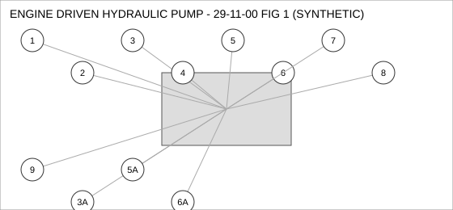
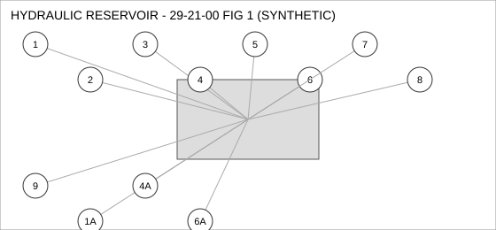
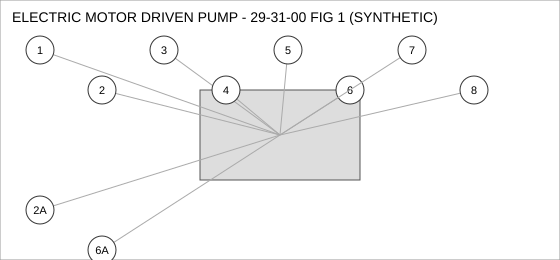
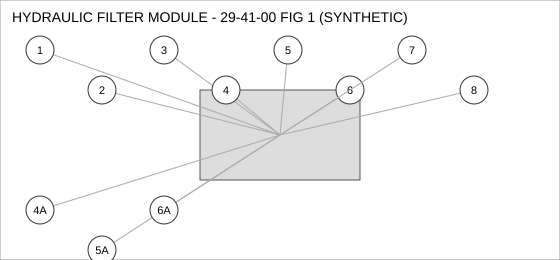

Document type: IPC | Revision: 14 | Fleet: B737
| CODE | AIRCRAFT |
|---|---|
| A | 737-700 |
| B | 737-800 |
| C | 737-MAX8 |

| FIG ITEM | PART NUMBER | NOMENCLATURE | EFFECT | UPA |
|---|---|---|---|---|
| 1 | 162-21542-11 | SENSOR - PRESSURE, ENGINE DRIVEN HYDRAULIC PUMP | ALL | 1 |
| 2 | 162-77449-27 | SEAL - O-RING, ENGINE DRIVEN HYDRAULIC PUMP | ALL | 1 |
| 3 | 162-64165-02 | ACTUATOR - LINEAR, ENGINE DRIVEN HYDRAULIC PUMP | B C | 1 |
| SUPERSEDED BY 162-34983-20 | ||||
| 3A | 162-34983-20 | ACTUATOR - LINEAR, ENGINE DRIVEN HYDRAULIC PUMP | B C | 1 |
| SUPERSEDES 162-64165-02. 162-64165-02 IS NOT INTERCHANGEABLE WITH THIS PART (ONE-WAY). | ||||
| 4 | 162-91973-15 | CONNECTOR - ELECTRICAL, ENGINE DRIVEN HYDRAULIC PUMP | ALL | 1 |
| 5 | 65-47752-15 | NUT - SELF-LOCKING, ENGINE DRIVEN HYDRAULIC PUMP | ALL | 2 |
| 5A | 162-54548-26 | NUT - SELF-LOCKING, ENGINE DRIVEN HYDRAULIC PUMP | ALL | 2 |
| ALTERNATE FOR 65-47752-15. PARTS ARE INTERCHANGEABLE. | ||||
| 6 | 285-41365-23 | DUCT - FLEXIBLE, ENGINE DRIVEN HYDRAULIC PUMP | ALL | 1 |
| 6A | 285-86011-22 | DUCT - FLEXIBLE, ENGINE DRIVEN HYDRAULIC PUMP | ALL | 1 |
| ALTERNATE FOR 285-41365-23. PARTS ARE INTERCHANGEABLE. | ||||
| 7 | 285-63476-03 | SWITCH - PRESSURE, ENGINE DRIVEN HYDRAULIC PUMP | ALL | 1 |
| 8 | 60-94896-27 | HOSE ASSEMBLY, ENGINE DRIVEN HYDRAULIC PUMP | ALL | 1 |
| 9 | 69-76698-23 | GASKET, ENGINE DRIVEN HYDRAULIC PUMP | B C | 1 |

| FIG ITEM | PART NUMBER | NOMENCLATURE | EFFECT | UPA |
|---|---|---|---|---|
| 1 | 69-71993-23 | SWITCH - PRESSURE, HYDRAULIC RESERVOIR | ALL | 2 |
| 1A | 60-16028-11 | SWITCH - PRESSURE, HYDRAULIC RESERVOIR | ALL | 2 |
| INTERCHANGEABLE WITH 69-71993-23 (TWO-WAY). | ||||
| 2 | 65-74923-02 | BOLT, HYDRAULIC RESERVOIR | A | 1 |
| 3 | 69-23154-28 | ACTUATOR - LINEAR, HYDRAULIC RESERVOIR | A | 2 |
| 4 | 162-12011-24 | SEAL - FLANGE, HYDRAULIC RESERVOIR | ALL | 1 |
| SUPERSEDED BY 65-32280-06 | ||||
| 4A | 65-32280-06 | SEAL - FLANGE, HYDRAULIC RESERVOIR | ALL | 1 |
| REPLACES 162-12011-24. THIS PART MAY REPLACE 162-12011-24; 162-12011-24 MAY NOT BE USED TO REPLACE THIS PART. | ||||
| 5 | 65-19807-16 | CLAMP - V-BAND, HYDRAULIC RESERVOIR | B C | 1 |
| 6 | 162-95175-03 | COUPLING - QUICK DISCONNECT, HYDRAULIC RESERVOIR | C | 1 |
| 6A | 65-40433-15 | COUPLING - QUICK DISCONNECT, HYDRAULIC RESERVOIR | C | 1 |
| INTERCHANGEABLE WITH 162-95175-03 (TWO-WAY). | ||||
| 7 | 162-51505-21 | GASKET, HYDRAULIC RESERVOIR | B C | 2 |
| 8 | 60-40771-21 | CONNECTOR - ELECTRICAL, HYDRAULIC RESERVOIR | ALL | 1 |
| 9 | 162-22903-25 | WASHER - LOCK, HYDRAULIC RESERVOIR | C | 1 |

| FIG ITEM | PART NUMBER | NOMENCLATURE | EFFECT | UPA |
|---|---|---|---|---|
| 1 | 69-69878-28 | DUCT - FLEXIBLE, ELECTRIC MOTOR DRIVEN PUMP | A | 1 |
| 2 | 162-23979-08 | GASKET, ELECTRIC MOTOR DRIVEN PUMP | A | 2 |
| 2A | 69-79579-17 | GASKET, ELECTRIC MOTOR DRIVEN PUMP | A | 2 |
| INTERCHANGEABLE WITH 162-23979-08 WHEN SB 29-2217 IS EMBODIED. | ||||
| 3 | 69-48696-01 | SEAL - O-RING, ELECTRIC MOTOR DRIVEN PUMP | ALL | 2 |
| 4 | 60-89482-24 | SENSOR - TEMPERATURE, ELECTRIC MOTOR DRIVEN PUMP | ALL | 2 |
| 5 | 65-89569-26 | BOLT, ELECTRIC MOTOR DRIVEN PUMP | A B | 1 |
| 6 | 285-42850-22 | PUMP - TRANSFER, ELECTRIC MOTOR DRIVEN PUMP | C | 1 |
| 6A | 60-71385-03 | PUMP - TRANSFER, ELECTRIC MOTOR DRIVEN PUMP | C | 1 |
| ALTERNATE FOR 285-42850-22. PARTS ARE INTERCHANGEABLE. | ||||
| 7 | 60-50492-26 | COUPLING - QUICK DISCONNECT, ELECTRIC MOTOR DRIVEN PUMP | ALL | 2 |
| 8 | 65-21813-10 | ACTUATOR - LINEAR, ELECTRIC MOTOR DRIVEN PUMP | ALL | 1 |

| FIG ITEM | PART NUMBER | NOMENCLATURE | EFFECT | UPA |
|---|---|---|---|---|
| 1 | 69-86619-13 | GASKET, HYDRAULIC FILTER MODULE | ALL | 1 |
| 2 | 162-13280-20 | PUMP - TRANSFER, HYDRAULIC FILTER MODULE | C | 4 |
| 3 | 65-94889-03 | SENSOR - TEMPERATURE, HYDRAULIC FILTER MODULE | B C | 2 |
| 4 | 162-25292-05 | SWITCH - PRESSURE, HYDRAULIC FILTER MODULE | ALL | 1 |
| 4A | 285-94518-12 | SWITCH - PRESSURE, HYDRAULIC FILTER MODULE | ALL | 1 |
| INTERCHANGEABLE WITH 162-25292-05 WHEN SB 29-3109 IS EMBODIED. | ||||
| 5 | 162-25220-04 | VALVE - CHECK, HYDRAULIC FILTER MODULE | ALL | 1 |
| 5A | 162-22015-22 | VALVE - CHECK, HYDRAULIC FILTER MODULE | ALL | 1 |
| ALTERNATE FOR 162-25220-04. PARTS ARE INTERCHANGEABLE. | ||||
| 6 | 162-58629-22 | BRACKET - MOUNTING, HYDRAULIC FILTER MODULE | ALL | 4 |
| SUPERSEDED BY 65-84000-07 | ||||
| 6A | 65-84000-07 | BRACKET - MOUNTING, HYDRAULIC FILTER MODULE | ALL | 4 |
| ALTERNATE FOR 162-58629-22. PARTS ARE INTERCHANGEABLE. | ||||
| 7 | 65-64379-21 | SENSOR - PRESSURE, HYDRAULIC FILTER MODULE | ALL | 1 |
| 8 | 69-14288-23 | CLAMP - V-BAND, HYDRAULIC FILTER MODULE | C | 1 |